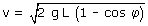
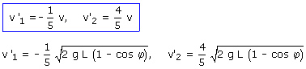
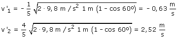

a) 1ª parte Velocidad de la bola B1 cuando llega a la posición de la bola B2:  Datos: L = 1 m, φ = 60º 2ª parte Velocidades de las bolas B1, B2 después del choque  Sustituyendo valores resulta:  Observa que la velocidad de la bola B1 tras el choque es negativa: ha rebotado |